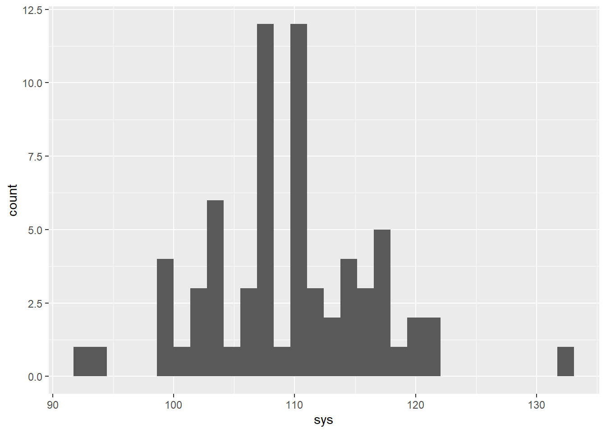
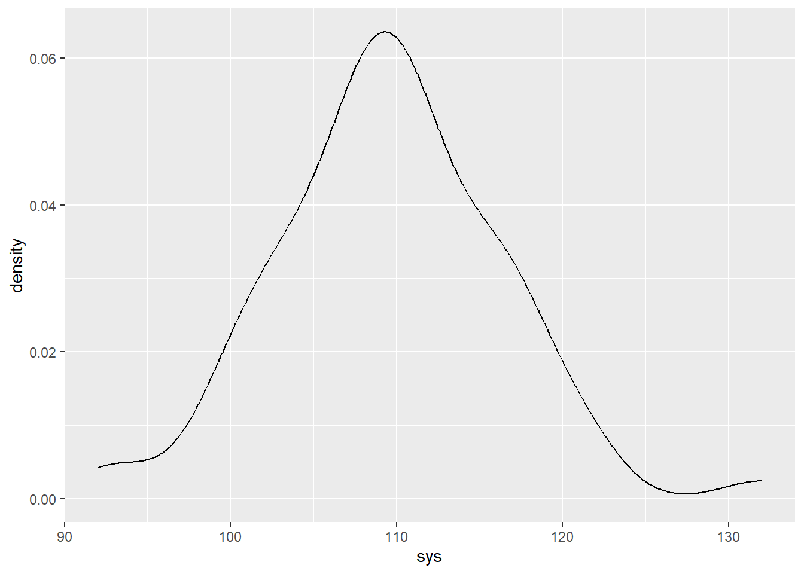

library(tidyverse)Warning: package 'tidyverse' was built under R version 4.4.3Warning: package 'ggplot2' was built under R version 4.4.3── Attaching core tidyverse packages ──────────────────────── tidyverse 2.0.0 ──
✔ dplyr 1.1.4 ✔ readr 2.1.5
✔ forcats 1.0.0 ✔ stringr 1.5.1
✔ ggplot2 4.0.0 ✔ tibble 3.2.1
✔ lubridate 1.9.4 ✔ tidyr 1.3.1
✔ purrr 1.0.4
── Conflicts ────────────────────────────────────────── tidyverse_conflicts() ──
✖ dplyr::filter() masks stats::filter()
✖ dplyr::lag() masks stats::lag()
ℹ Use the conflicted package (<http://conflicted.r-lib.org/>) to force all conflicts to become errorsblood_pressures <- read_csv("blood_pressure_measures.csv")Rows: 70 Columns: 7
── Column specification ────────────────────────────────────────────────────────
Delimiter: ","
chr (2): Device, Day_Night
dbl (5): Number, Systolic (mmHg), MAP (mmHg), Diastolic (mmHg), HR (bpm)
ℹ Use `spec()` to retrieve the full column specification for this data.
ℹ Specify the column types or set `show_col_types = FALSE` to quiet this message.blood_pressures <- rename(blood_pressures,
sys = `Systolic (mmHg)`,
MAP = `MAP (mmHg)`,
dias = `Diastolic (mmHg)`,
HR = `HR (bpm)`)
glimpse(blood_pressures)Rows: 70
Columns: 7
$ Device <chr> "D", "D", "D", "D", "D", "D", "D", "D", "D", "D", "D", "D", …
$ Number <dbl> 1, 2, 3, 4, 5, 6, 7, 8, 9, 10, 11, 12, 13, 14, 15, 16, 17, 1…
$ Day_Night <chr> "D", "D", "D", "D", "D", "D", "D", "D", "D", "D", "D", "D", …
$ sys <dbl> 108, NA, 114, 114, 120, NA, 106, 110, 108, 108, 101, 121, 11…
$ MAP <dbl> 84, NA, 90, 91, 98, NA, 87, 87, 83, 86, 86, 95, 88, 84, 89, …
$ dias <dbl> 63, NA, 70, 71, 79, NA, 71, 67, 63, 68, 73, 74, 65, 60, 71, …
$ HR <dbl> 84, NA, 80, 78, 84, NA, 75, 91, 80, 76, 78, 85, 68, 71, 70, …summary(blood_pressures) Device Number Day_Night sys
Length:70 Min. : 1.00 Length:70 Min. : 92.0
Class :character 1st Qu.:18.25 Class :character 1st Qu.:105.8
Mode :character Median :35.50 Mode :character Median :110.0
Mean :35.50 Mean :109.6
3rd Qu.:52.75 3rd Qu.:114.0
Max. :70.00 Max. :132.0
NA's :2
MAP dias HR
Min. : 70.00 Min. :51.0 Min. :62.00
1st Qu.: 86.00 1st Qu.:60.0 1st Qu.:69.00
Median : 87.50 Median :65.5 Median :74.00
Mean : 88.11 Mean :65.5 Mean :74.76
3rd Qu.: 91.00 3rd Qu.:71.0 3rd Qu.:80.00
Max. :102.00 Max. :79.0 Max. :94.00
NA's :32 NA's :2 NA's :2 ggplot(data = blood_pressures, aes(x = sys)) +
geom_histogram() # histogram for one numerical variable.`stat_bin()` using `bins = 30`. Pick better value `binwidth`.Warning: Removed 2 rows containing non-finite outside the scale range
(`stat_bin()`).
ggplot(data = blood_pressures, aes(x = sys)) +
geom_density() # density for one numerical variableWarning: Removed 2 rows containing non-finite outside the scale range
(`stat_density()`).